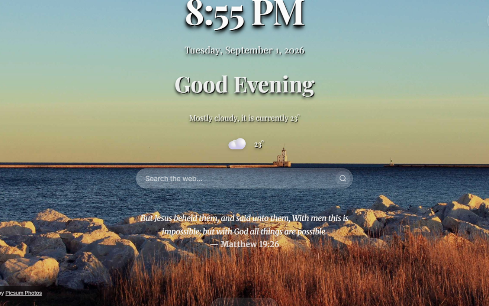
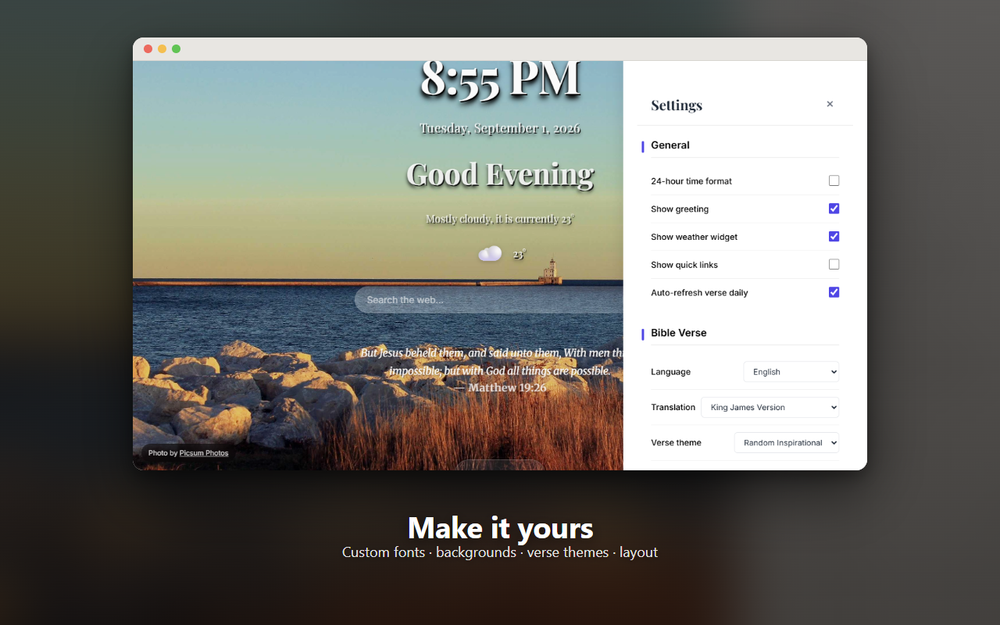
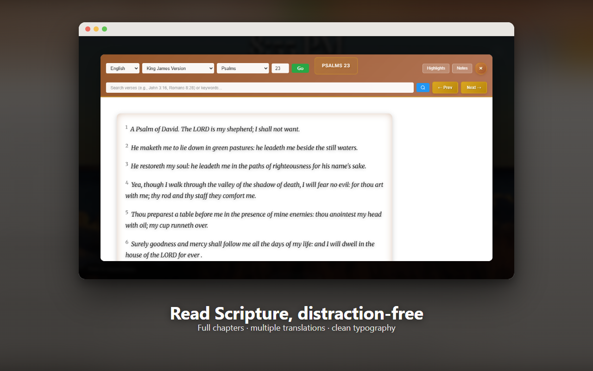
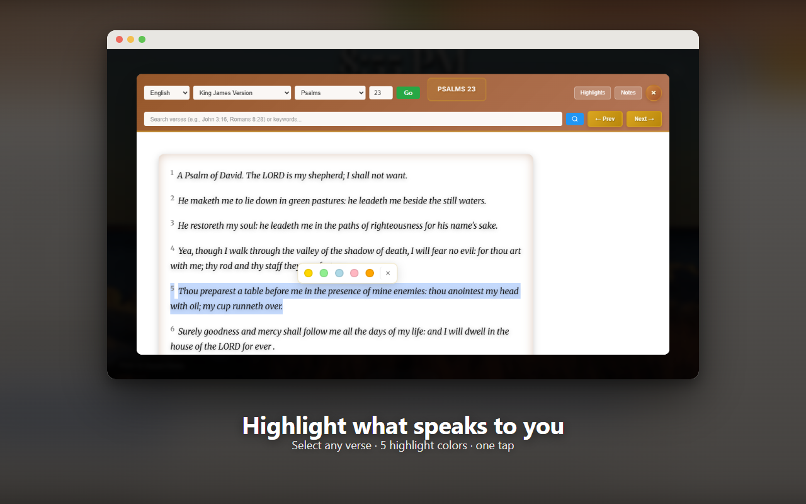
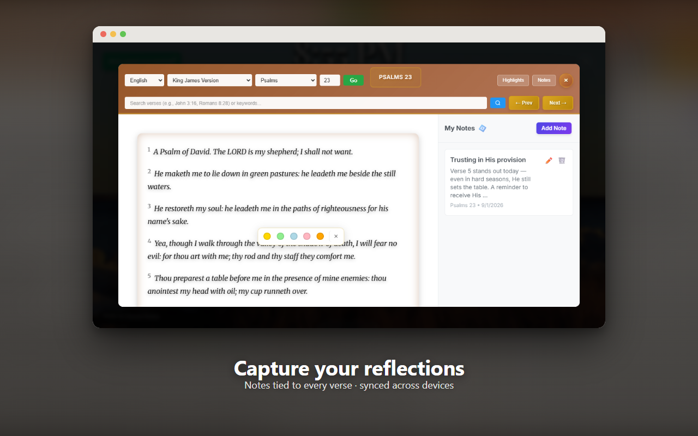
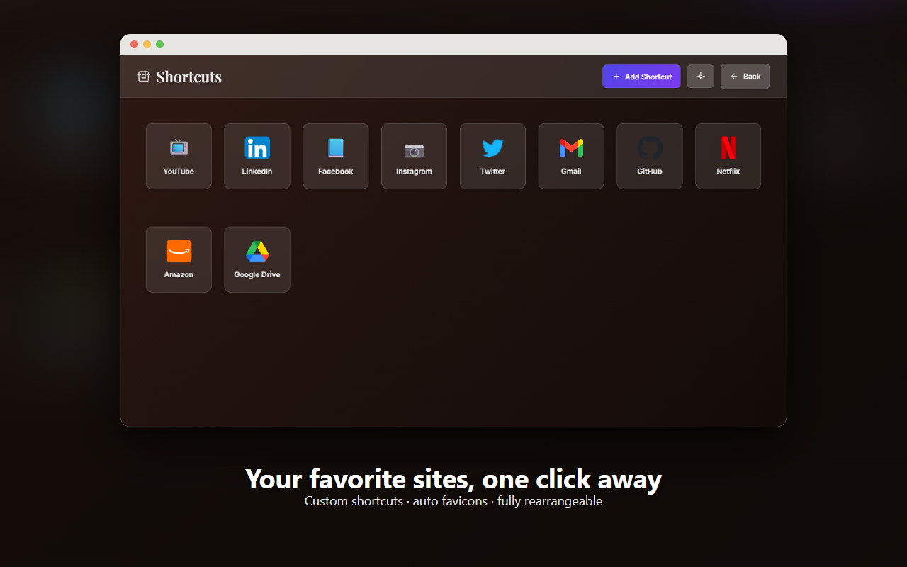

A minimalist new tab page with a daily Bible verse, live weather, a full in-page Bible reader with highlighting and notes, and complete visual customization.

A calm, focused new tab — built around one thing: your daily time in the Word.
A fresh verse every day, by theme or at random, in multiple languages and translations.
Accurate local weather using your device location, with automatic fallbacks if you'd rather not share it.
Select any verse, highlight it in 5 colors, and attach personal notes as you read.
Your favorite sites, one click away, with automatic favicons and free rearranging.
Fonts, backgrounds, verse themes, layout widths — make it feel like yours.
No accounts, no ads, no tracking. Settings sync only through your own browser account.
Every screenshot below is the real extension — nothing staged.




